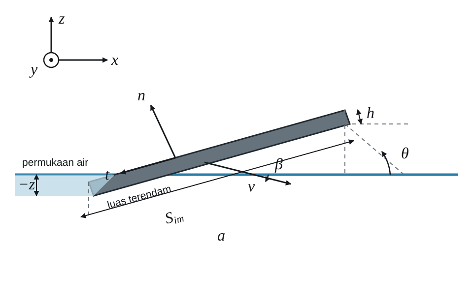
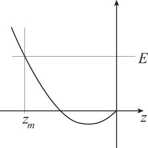

Gambar 4.1. Penampang batu pipih selama proses tumbukan (diadaptasi dari artikel L. Bocquet tahun 2003). [Deskripsi Gambar][/caption]Perhatikan sebuah batu tipis, pipih, homogen, dan simetris (misalnya berbentuk persegi atau lingkaran) dengan massa total $latex M$, dan asumsikan bahwa selama proses tumbukan batu tidak berputar pada sumbu normalnya ataupun terguling-guling, sehingga orientasinya tetap sejajar dengan orientasi semula.[footnote]Apakah asumsi ini masuk akal? Mengapa atau mengapa tidak?[/footnote] Oleh karena itu, masalah ini dapat disederhanakan dengan meninjau penampang batu yang melalui pusat massanya dan sejajar dengan bidang yang ditentukan oleh arah vertikal dan vektor kecepatan batu (lihat Gambar 4.1). Dengan demikian, semua titik pada penampang ini (dan sebenarnya pada seluruh batu) bergerak dengan vektor kecepatan yang sama. Parameter masalah ini adalah ukuran batu $latex a$ ($latex a$ adalah panjang sisi batu persegi atau diameter batu berbentuk lingkaran), ketebalannya $latex h \ll a$, vektor kecepatannya $latex \vec v(t)$, dan sudut $latex \theta$ (yang dianggap konstan selama setiap fase tumbukan) antara batu dan permukaan air. Kita akan menyebut $latex \beta(t)$ sebagai sudut antara $latex \vec v(t)$ dan arah horizontal, serta mendefinisikan dua basis ortonormal: $latex (\vec x, \vec y, \vec z)$ dan $latex (\vec n, \vec y, \vec t)$, sedemikian sehingga $latex \vec y$ tegak lurus terhadap bidang penampang, $latex \vec z$ mengarah ke atas, $latex \vec n$ normal terhadap permukaan batu, dan $latex \vec t$ menyinggung permukaan batu. Lihat Gambar 4.1 untuk ilustrasinya. Karena kita telah membuat asumsi bahwa batu tidak berotasi selama proses tumbukan, geraknya dapat direduksi menjadi gerak pusat massanya dan sepenuhnya dideskripsikan oleh hukum Newton. Gaya-gaya yang bekerja pada batu ialah gaya gravitasi, $latex - M g\, \vec z$, dan gaya $latex \vec F = F_x\, \vec x + F_z\, \vec z$ yang dikerahkan air pada batu. Jika kita tuliskan $latex \vec v = v_x\, \vec x + v_z\, \vec z$, kita memperoleh$latex M\ \frac{d v_x}{d t} = F_x, \qquad M\ \frac{d v_z}{d t} = - M g + F_z. \qquad (4.1)$
Tentu saja, sekarang kita memerlukan model untuk gaya $latex \vec F$. Pertama, gaya ini dapat dianggap sebagai jumlah gaya angkat yang sejajar dengan $latex \vec n$ dan gaya gesek yang sejajar dengan $latex \vec t$. Kedua, mari kita tinjau dinamika air selama proses tumbukan. Fluida bergerak menurut persamaan Navier-Stokes,$latex \displaystyle \rho_w \left( \frac{\partial \vec V}{\partial t} + \left(\vec V \cdot \vec \nabla \right) \vec V \right)= - \nabla p + \mu \nabla^2 \vec V + \vec f,$
di mana $latex \rho_w$ adalah massa jenis air, $latex \vec V$ adalah vektor kecepatan sebuah partikel fluida, $latex p$ adalah tekanan, $latex \mu$ adalah viskositas dinamis air, dan $latex \vec f$ menyatakan gaya-gaya volume (seperti gravitasi) yang bekerja pada air. Pada antarmuka antara air dan batu, tekanan $latex p$ diberikan oleh$latex \displaystyle p \simeq \frac{||\vec F||}{S_{im}},$
di mana $latex S_{im}$ adalah luas permukaan bagian batu yang terendam (lihat Gambar 4.1). Sekarang kita akan melakukan analisis dimensi untuk membandingkan suku inersia dan suku difusi dalam persamaan ini. Kita mempunyai$latex \displaystyle \frac{\left[ \rho_w \left( \vec V \cdot \vec \nabla\right) \vec V \right]}{\left[\mu \vec \nabla^2 \vec V\right]} = \left[ \frac{\rho_w ||\vec V|| L}{\mu} \right] = \left[ \frac{||\vec V|| L}{\nu_w} \right] \equiv Re,$
di mana $latex L$ adalah panjang karakteristik, $latex \nu_w = \mu / \rho_w$ adalah viskositas kinematik air, dan $latex Re$ disebut bilangan Reynolds. Jika kita mengasumsikan bahwa $latex ||\vec V||$ berorde beberapa meter per detik, bahwa $latex L$ berorde ukuran batu—misalnya beberapa sentimeter—dan karena untuk air $latex \nu_w = 10^{-6}$ m2 s$latex ^{-1}$, kita memperoleh$latex Re = \frac{10 \cdot 10^{-2}}{10^{-6}} = 10^5 \gg 1.$
Akibatnya, suku-suku viskos dapat diabaikan, dan kita dapat menyeimbangkan suku-suku inersia dengan suku-suku tekanan. Hal ini memberikan$latex \left[ \frac{p}{L} \right] \simeq \left[ \rho_w \left( \vec V \cdot \vec \nabla\right) \vec V \right] = \left[ \frac{\rho_w ||\vec V||^2}{L} \right],$
yang bersama dengan $latex p \simeq ||\vec F||/S_{im}$ menghasilkan$latex ||\vec F|| \propto \rho_w\, S_{im}\, ||\vec V||^2.$
Karena $latex ||\vec V||$ dan $latex ||\vec v||$ sebanding, kita akan menganggap bahwa besar gaya $latex \vec F$ sebanding dengan massa jenis air $latex \rho_w$, luas permukaan yang terendam $latex S_{im}$, dan kuadrat besar vektor kecepatan batu, $latex ||\vec v||^2$. Dengan demikian, kita dapat menuliskan$latex \vec F = \left(\frac{1}{2} C_l\, \vec n + \frac{1}{2} C_f \, \vec t \right) \rho_w \, S_{im} \left(v_x^2 + v_z^2\right),$
di mana koefisien tak berdimensi $latex C_l$ dan $latex C_f$ mendeskripsikan bagaimana komponen normal (angkat) dan tangensial (gesek) dari $latex \vec F$ berubah terhadap $latex \rho_w \, S_{im}\, ||\vec v||^2$. Kita akan mengasumsikan bahwa koefisien-koefisien ini konstan. Sekarang kita dapat menyubstitusikan ekspresi ini ke dalam Persamaan (4.1). Karena $latex \vec n = - \sin(\theta) \, \vec x + \cos(\theta)\, \vec z$ dan $latex \vec t = - \cos(\theta)\, \vec x - \sin(\theta) \vec z$, kita memperoleh$latex \begin{array}{ll} \displaystyle M\ \frac{d v_x}{d t} = - \frac{1}{2} \rho_w \, S_{im}(z) \left(v_x^2 + v_z^2\right) \left(C_l \sin(\theta) + C_f \cos(\theta)\right),\\ \displaystyle M \ \frac{d v_z}{d t} = - M g + \frac{1}{2} \rho_w \, S_{im}(z) \left(v_x^2 + v_z^2\right) \left(C_l \cos(\theta) - C_f \sin(\theta)\right). \end{array}\qquad(4.2)$
Persamaan-persamaan ini nonlinear terhadap $latex v_x$ dan $latex v_z$. Selain itu, kita telah menyatakan secara eksplisit kebergantungan $latex S_{im}$ pada koordinat vertikal $latex z$ dari bagian batu yang berada paling dalam di bawah air (lihat Gambar 4.1). Persamaan (4.2) berlaku selama batu belum terendam seluruhnya. Jika batu terendam seluruhnya, gaya angkat yang dikerahkan air pada batu akan diberikan oleh hukum Archimedes, dan batu akan tenggelam. Pada awal fase tumbukan, $latex v_z < 0$. Agar batu memantul di permukaan air, kita harus mempunyai $latex d v_z / d t > 0$, sehingga $latex v_z$ bernilai positif pada akhir fase tumbukan. Kita melihat bahwa sudut $latex \theta$ harus kecil agar hal ini terjadi, sebab $latex C_l \cos(\theta) - C_f \sin(\theta)$ harus bernilai positif jika kita ingin$latex \frac{1}{2} \rho_w \, S_{im}(z) \left(v_x^2 + v_z^2\right) \left(C_l \cos(\theta) - C_f \sin(\theta)\right)$
mengimbangi $latex - M g$.$latex \displaystyle M\ \frac{d v_x}{d t} = 0, \qquad M\ \frac{d v_z}{d t}= - M g. \qquad (4.3)$
Jika kita menyatakan koordinat batu dengan $latex X$ dan $latex Z$, kita mempunyai$latex X(t)=X(0) + v_x(0) t \qquad Z(t) = v_z(0) t -\frac{1}{2} g t^2, \qquad (4.4)$
di mana $latex t=0$ ditetapkan pada awal fase terbang bebas. Posisi awal $latex (X(0), Z(0)=0)$ dan kecepatan awal $latex (v_x(0),v_z(0))$ batu diberikan oleh posisi dan kecepatan akhir pada fase tumbukan sebelumnya, kecuali, tentu saja, jika ini merupakan fase terbang bebas yang pertama. Gerak rotasi batu sebagai benda tegar terhadap pusat massanya diberikan oleh persamaan Euler,$latex \begin{array}{ll}&I_{-y} \displaystyle \frac{d \omega_{-y}}{d t} - \omega_n \omega_p (I_n - I_p) = N_{-y}\\& \displaystyle I_n \frac{d \omega_n}{d t} - \omega_p \omega_{-y} (I_p - I_{-y}) = N_n \\ & \displaystyle I_p \frac{d \omega_p}{d t} - \omega_{-y} \omega_n (I_{-y} - I_n) = N_p,\end{array} \qquad (4.5)$
di mana $latex I_\alpha$, $latex \omega_\alpha$, dan $latex N_\alpha$ masing-masing adalah momen inersia, kecepatan sudut, dan momen gaya terhadap sumbu utama benda yang sejajar dengan $latex \vec \alpha$. Di sini, $latex -\vec y$ dan $latex \vec p$ adalah vektor satuan yang menyinggung permukaan batu dan sejajar dengan dua sumbu utamanya. Kerangka ortonormal $latex (-\vec y, \vec n, \vec p)$ melekat pada pusat massa batu dan berotasi bersamanya. Dalam penampang pada Gambar 4.1, arah $latex \vec p$ berimpit dengan arah tangensial $latex \vec t$. Perangkat persamaan serupa dapat dituliskan untuk fase tumbukan jika kita ingin memperhitungkan kemungkinan batu berputar pada sumbu normalnya dan terguling-guling saat bertumbukan dengan air. Karena batu berbentuk persegi atau lingkaran, berlaku $latex I_{-y} = I_p \equiv J_1$, dan kita akan menggunakan notasi $latex I_n \equiv J_0$. Selain itu, satu-satunya gaya yang bekerja pada batu, $latex -M g\, \vec z$, bekerja di pusat massanya, sehingga semua momen gaya bernilai nol. Persamaan (4.5) kemudian dapat disederhanakan menjadi$latex \begin{array}{ll}& J_1 \displaystyle \frac{d \omega_{-y}}{d t} - \omega_n \omega_p (J_0 - J_1) = 0 \\ & J_0\, \displaystyle \frac{d \omega_n}{d t} = 0 \\& J_1 \displaystyle \frac{d \omega_p}{d t} - \omega_{-y} \omega_n (J_1 - J_0) =0. \end{array} \qquad (4.6)$
$latex \begin{array}{ll} \displaystyle J_1 \frac{d \omega_{-y}}{d t} - \Omega_0\, \omega_p (J_0 - J_1) &= 0 \\ \displaystyle J_1 \frac{d \omega_p}{d t} - \omega_{-y}\, \Omega_0 (J_1 - J_0) &= 0, \end{array} \qquad (4.7)$
yang dalam bentuk matriks dapat ditulis sebagai $latex \displaystyle \frac{d}{dt} \left(\begin{array}{c}\omega_{-y} \\ \omega_p \end{array}\right) = \left(\begin{array}{cc} 0 & \delta \\ -\delta & 0 \end{array}\right) \left(\begin{array}{c}\omega_{-y} \\ \omega_p \end{array}\right)$ dengan $latex \delta = \frac{\Omega_0 (J_0 -J_1)}{J_1}.$ Jika tidak ada putaran awal, yaitu jika $latex \Omega_0 = 0$, kita memperoleh$latex \omega_{-y} = \omega_{-y}(0) \qquad \omega_p = \omega_p(0),$
yang, karena $latex \omega_{-y}=d \theta/dt$, menyiratkan$latex \theta(t) = \theta(0) + \omega_{-y}(0)\, t.$
Dengan kata lain, jika selama fase tumbukan batu memperoleh sedikit saja rotasi terhadap sumbu $latex -\vec y$, yaitu jika $latex \omega_{-y}(0)$ tidak nol, batu akan mulai berjungkir selama fase terbang bebas. Pada tumbukan berikutnya, batu kemungkinan besar menghantam air dengan sudut datang $latex \theta$ yang besar, lalu tenggelam. Karena itu, $latex \Omega_0$ harus tidak nol. Dalam keadaan ini, $latex \omega_{-y}$ dan $latex \omega_p$ sama-sama berosilasi terhadap waktu dengan frekuensi $latex |\delta|$ dan diberikan oleh$latex \begin{array}{c}\omega_{-y}(t) = \omega_{-y}(0) \cos(\delta t) + \omega_p(0) \sin(\delta t) \\ \omega_p(t) = \omega_p(0) \cos(\delta t) - \omega_{-y}(0) \sin(\delta t). \end{array}$
Akibatnya,$latex \theta(t) = \theta(0) + \frac{\omega_{-y}(0)}{\delta} \sin(\delta t) + \frac{\omega_p(0)}{\delta} \left[1-\cos(\delta t)\right]$
dan nilainya akan tetap dekat dengan $latex \theta(0)$ jika koefisien-koefisien dalam persamaan di atas kecil. Jadi, putaran terhadap arah $latex \vec n$ menstabilkan batu dan mencegahnya berjungkir. Gejala ini disebut efek giroskopik. Sekarang kita beralih ke gerak pusat massa batu selama fase terbang bebas. Persamaan (4.4) menunjukkan bahwa durasi $latex \tau_f$ setiap fase terbang bebas memenuhi $latex Z(\tau_f)=0$, yaitu$latex \tau_f = \frac{2 v_z(0)}{g}, \qquad v_z(0) \gt 0,$
dan panjang setiap lompatan, yakni jarak yang ditempuh batu sepanjang arah $latex \vec x$, adalah$latex \lambda = v_x(0) \tau_f = v_x(0) \frac{2 v_z(0)}{g}.$
Dari Persamaan (4.2), jelas bahwa ketika $latex \theta$ kecil, $latex v_x$ berkurang selama setiap fase tumbukan. Karena itu, nilai $latex v_x(0)$—yakni nilai $latex v_x$ pada awal setiap fase terbang bebas—akan berkurang dari satu fase terbang bebas ke fase berikutnya. Karena kita tidak mengharapkan $latex v_z$ meningkat di antara dua fase terbang bebas, panjang setiap lompatan akan berkurang dari satu lompatan ke lompatan berikutnya, sebagaimana yang kita harapkan.$latex M \displaystyle \frac{d v_z}{d t} = - M g + \frac{1}{2} \rho_w \, S_{im}(z) \left(v_x^2 + v_z^2\right) \left(C_l \cos(\theta) - C_f \sin(\theta)\right) . \quad (4.10)$
Kita dapat memahami informasi yang terkandung dalam persamaan ini dengan menggunakan pendekatan $latex v_x \gg v_z$, yang cukup masuk akal, dan juga mengasumsikan bahwa $latex v_x^2 + v_z^2 = v^2 \equiv v_0^2$ konstan selama fase tumbukan. Pernyataan terakhir ini tidak sepenuhnya benar karena gesekan dengan air memperlambat batu. Namun, jika batu memantul sekitar 20 kali, kehilangan relatif $latex (v^2(0) - v^2(\tau_c))/v^2(0)$ selama setiap tumbukan kecil, setidaknya untuk sebagian besar tumbukan. Di sini, $latex \tau_c$ menyatakan durasi tumbukan. Dengan syarat-syarat ini, Persamaan (4.10) menjadi$latex M \displaystyle \frac{d v_z}{d t} = - M g + \frac{1}{2} \rho_w S_{im}(z) v_0^2 \left(C_l \cos(\theta) - C_f \sin(\theta) \right) \equiv - {\mathcal F}(z). \quad (4.11)$
Ruas kanan, $latex - {\mathcal F}(z)$, hanya merupakan fungsi dari $latex z$ (ingat bahwa sejak awal kita mengasumsikan $latex \theta$ konstan selama setiap fase tumbukan). Karena $latex v_z = d z / d t$, kita dapat mengalikan kedua ruas persamaan ini dengan $latex v_z$ dan mengintegralkannya terhadap $latex t$ untuk memperoleh$latex \displaystyle \frac{M}{2} \left(\frac{d z}{d t}\right)^2 = \int - {\mathcal F}(z) \frac{d z}{d t} \, dt = \int - {\mathcal F}(z) \, dz \equiv -\, {\mathcal U}(z) + E, \quad (4.12)$
di mana $latex {\mathcal U}(z) = \int_0^z {\mathcal F}(s)\, ds,$ dan konstanta $latex E$ bersifat sembarang. Ketika $latex z=0$, $latex S_{im}(z)=0$; selain itu, $latex S_{im}(z)$ bertambah ketika $latex z$ menjadi semakin negatif. Oleh karena itu, potensial $latex {\mathcal U}(z)$ berbentuk seperti yang digambarkan pada Gambar 4.2 untuk nilai $latex z$ negatif, asalkan $latex \theta$ cukup kecil. [caption id="attachment_126" align="alignleft" width="300"]
Gambar 4.2. Bentuk potensial U(z) sebagai fungsi z untuk z < 0. [Deskripsi Gambar][/caption]Dari bentuk $latex {\mathcal U}$, kita dapat melihat bahwa lintasan batu sedemikian rupa sehingga $latex z$ memiliki titik balik pada $latex z=z_m$. Pada akhir fase tumbukan, batu akan muncul kembali dengan kecepatan vertikal $latex v_z(\tau_c) = - v_z(0)$, berlawanan dengan kecepatan vertikalnya pada awal fase tumbukan. Hal ini hanya terjadi jika energi $latex E$ memungkinkan batu belum terbenam seluruhnya ketika $latex z=z_m$. Jika $latex E$ dipertahankan tetap, keadaan ini memberlakukan syarat pada $latex v_0^2$ karena semakin besar $latex v_0^2$, semakin kecil $latex |z_m|$. Jadi, batu tidak akan tenggelam selama fase tumbukan apabila $latex v_0^2 > v_c^2$, dengan kecepatan kritis $latex v_c$ yang bergantung pada parameter-parameter masalah. Karena $latex v_x \gg v_z$, syarat pada $latex v_0$ juga dapat ditulis kembali sebagai syarat pada kecepatan awal batu dalam arah $latex \vec x$, yaitu $latex v_x(0) > v_c$. Sebagaimana ditunjukkan dalam artikel L. Bocquet tahun 2003 dan dalam latihan pada akhir bab ini, kita dapat menghitung $latex S_{im}(z)$ untuk batu dengan bentuk tertentu, menyelesaikan Persamaan (4.11) secara eksplisit, dan memperoleh ekspresi untuk $latex v_c$. Seperti disebutkan di atas, kita mengasumsikan bahwa dinamika sistem bersifat konservatif (yaitu $latex v^2 = v_0^2$ dianggap konstan). Hal ini jelas tidak sepenuhnya benar karena batu tidak terus memantul tanpa henti. Energi hilang selama proses tumbukan akibat gesekan batu dengan permukaan air. Semua yang telah kita nyatakan sebelumnya tetap benar secara kualitatif—khususnya, batu akan muncul kembali dengan kecepatan vertikal yang hanya sedikit lebih kecil daripada $latex |v_z(0)|$—selama kehilangan energi relatif dalam satu fase tumbukan kecil. Kondisi ini tentu terpenuhi pada pantulan-pantulan awal, tetapi tidak lagi berlaku pada pantulan-pantulan terakhir. Karena kehilangan energi inilah penyebab utama batu melambat, sekarang kita akan mencoba memperkirakan besarannya. Perubahan energi selama tumbukan, yang dinyatakan dengan $latex \mathcal W$, sama dengan usaha yang dilakukan oleh gaya gesek air pada batu dan bernilai negatif untuk disipasi. Secara kasar, nilainya dapat diperkirakan sebagai$latex \begin{align} {\mathcal W} & \simeq \left[ \text{gaya sepanjang } \vec x \right] \cdot \left[ \text{jarak yang ditempuh batu sepanjang } \vec x \right] \\ & \simeq \vec F \cdot \vec x l, \end{align}$
di mana $latex l = v_x(0)\ \tau_c$. Dari Persamaan (4.11), kita melihat bahwa$latex \left[\frac{\rho_w}{M} v_0^2 \right] = L^{-1} T^{-2},$
sehingga kita dapat memperkirakan$latex \tau_c \propto \displaystyle \sqrt{\frac{M}{a \rho_w v_0^2}} \simeq \sqrt{\frac{M}{a \rho_w}} \frac{1}{v_x(0)},$
di mana $latex a$ adalah ukuran batu (panjang sisi atau diameter). Oleh karena itu, pada orde terendah, $latex l = v_x(0) \tau_c$ tidak bergantung pada $latex v_x(0)$. Selama tumbukan, ruas kanan Persamaan (4.10) bernilai kecil, sehingga kita dapat menulis$latex M g \simeq \vec F \cdot \vec z.$
Selain itu, karena$latex \displaystyle \frac{\vec F \cdot \vec x}{\vec F \cdot \vec z} = - \frac{C_l \sin(\theta) + C_f \cos(\theta)}{C_l \cos(\theta) - C_f \sin(\theta)} \equiv - \mu,$
(rasio $latex \mu$ tidak boleh tertukar dengan viskositas dinamis air), kita memperoleh$latex \vec F \cdot \vec x \simeq - M g\, \mu,$
dan$latex {\mathcal W} \simeq - M g\, \mu \, l.$
Jadi, karena selisih energi kinetik antara awal dan akhir fase tumbukan sama dengan $latex \mathcal W$, kita memperoleh$latex \frac{1}{2} M v_x^2(\tau_c) - \frac{1}{2} M v_x^2(0) = {\mathcal W} = - M g\, \mu\, l,$
dan kecepatan awal $latex v_x(0)$ harus memenuhi$latex v_x(0) > \sqrt{2\, g\, \mu\, l} \equiv V_c.$
Dengan menggabungkan seluruh hasil tersebut, kecepatan dalam arah $latex \vec x$ pada awal fase tumbukan harus memenuhi$latex v_x(0) > \max(v_c,V_c),$
di mana $latex v_c$ diperoleh dengan menetapkan bahwa batu tidak boleh terbenam seluruhnya selama tumbukan, sedangkan $latex V_c$ memastikan batu bergerak cukup cepat untuk mengimbangi kehilangan energi akibat gaya gesek. Pembahasan kita tentang fase terbang bebas menunjukkan bahwa panjang setiap lompatan sebanding dengan kecepatan horizontal $latex v_x$. Kita tahu bahwa $latex v_x$ bersifat kekal selama fase terbang bebas (lihat Persamaan (4.3)) dan bahwa $latex v_x^2$ berkurang sebesar $latex 2\, g\, \mu\, l$ selama setiap fase tumbukan. Karena $latex |v_z|$ sama pada awal dan akhir setiap fase terbang bebas, dan karena $latex v_z$ hanya berubah sedikit selama fase tumbukan, panjang lompatan setelah $latex N$ fase tumbukan diberikan oleh$latex \begin{align}\lambda_N &= \frac{2 |v_z(0)|}{g} \sqrt{v_{x,0}^2 - 2 \, N \, g\, \mu\, l} = \frac{2 |v_z(0)| v_{x,0}}{g} \sqrt{1 - \frac{2 \, N \, g\, \mu\, l}{v_{x,0}^2}}\\ &= \lambda_0 \sqrt{1 - \frac{N}{N_c}}, \qquad \lambda_0 = \frac{2 |v_z(0)| v_{x,0}}{g}, \ N_c = \frac{v_{x,0}^2}{2 \, g\, \mu\, l}, \end{align}$
di mana $latex v_{x,0}$ adalah kecepatan batu dalam arah $latex \vec x$ ketika mula-mula dilempar. Jadi, panjang setiap lompatan berkurang ketika $latex N$ membesar dan berskala seperti $latex \sqrt{1-N/N_c}$.$latex \displaystyle z(t) = \frac{-g}{\omega_0^2} + \frac{g}{\omega_0^2} \cos(\omega_0 t) + \frac{v_z(0)}{\omega_0} \sin(\omega_0 t),$
$latex \displaystyle \text{dengan } \qquad \omega_0^2 = \frac{\left(C_l \cos(\theta)-C_f \sin(\theta)\right) \rho_w v_x(0)^2 a}{2 M \sin(\theta)}$.
$latex \displaystyle z(t) = \frac{-g}{\omega_0^2} + \frac{g}{\omega_0^2} \cos(\omega_0 t) + \frac{v_z(0)}{\omega_0} \sin(\omega_0 t),$
dengan$latex \displaystyle \omega_0^2 = \frac{\left(C_l \cos(\theta)-C_f \sin(\theta)\right) \rho_w v_x(0)^2 a}{2 M \sin(\theta)}.$
$latex \displaystyle \frac{d^2 \theta}{d t^2} + \nu^2 \left(\theta - \theta(0)\right) = \frac{{\mathcal M}_\theta}{J_1},$
dengan $latex \nu = ((J_0-J_1)/J_1)\,\Omega_0$, sedangkan $latex {\mathcal M}_\theta \equiv N_{-y}$ adalah komponen torsi yang diberikan air pada batu dalam arah peningkatan sudut kemiringan (sumbu $latex -\vec y$). Bentuk ini mempertahankan kuadrat frekuensi $latex \nu^2$ pada Persamaan (20) artikel sumber.